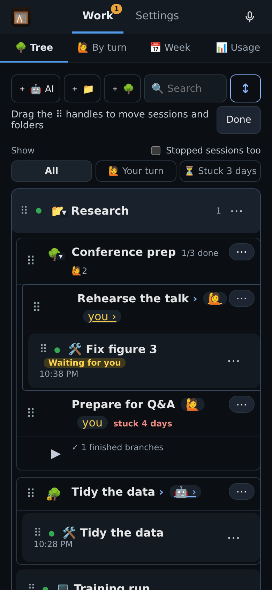
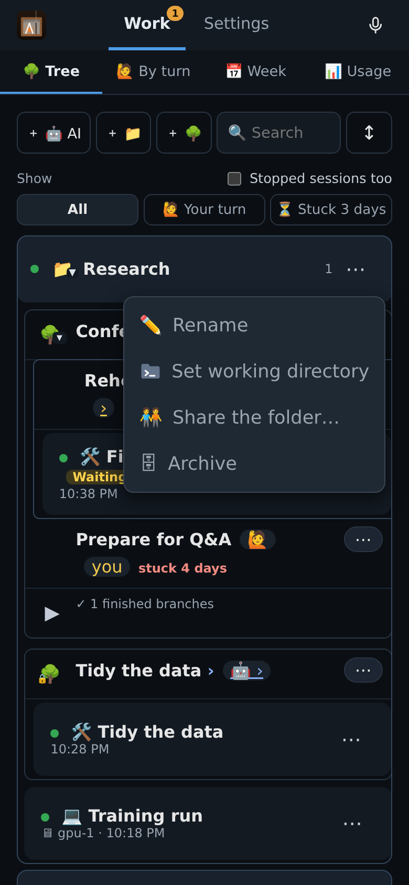
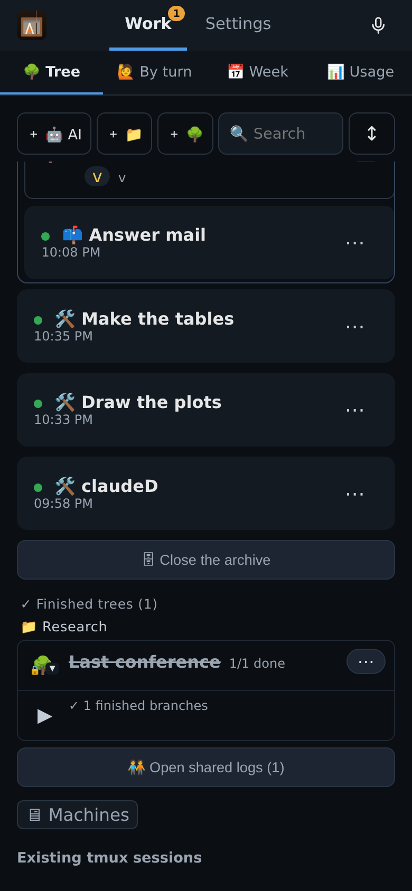
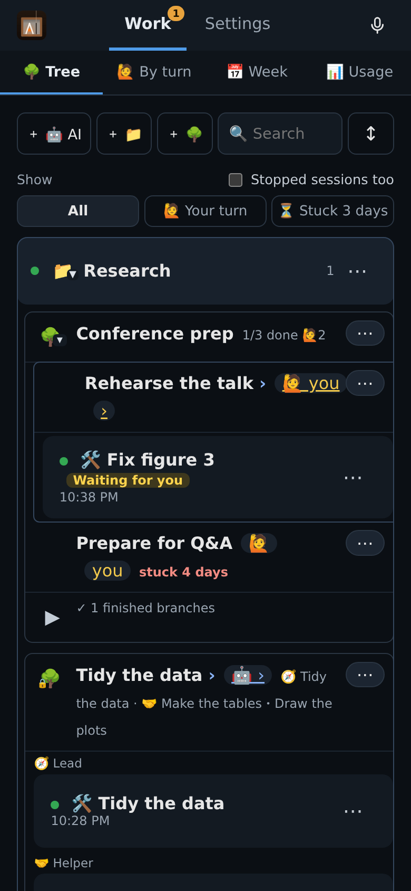
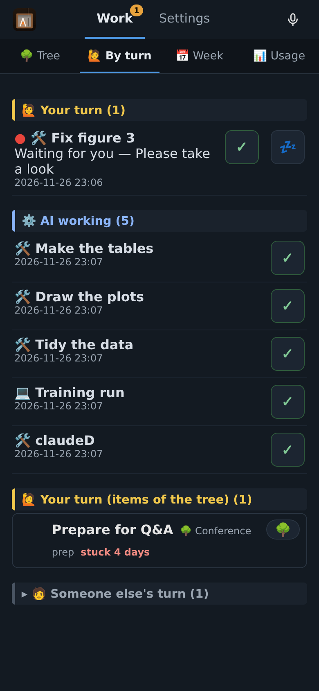
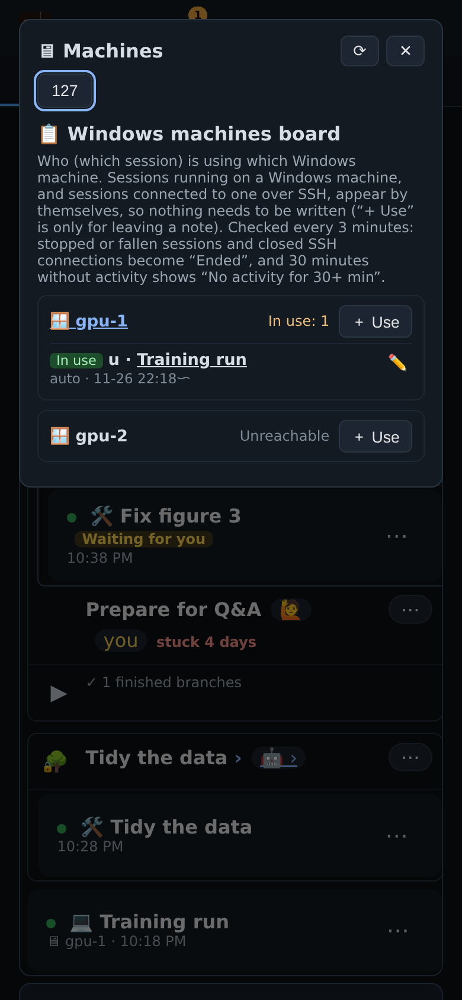

AI-za Tutorial: Advanced
This continues from Basics. It covers keeping things organized as your sessions multiply (folders, work trees, patrol, By turn), linking with other sessions, going outside the devbox (mailbox, host, root), and using other machines.
1. Organizing with folders and work trees
In the 🌳 Tree of Work, you can group sessions into folders, and also place them under items of a work tree (a job written out as branches of things to do, Chapter 3). You can also make folders inside folders, with no limit on depth.

- Select / open: press a folder row once to select it (the frame lights up blue), and press the selected row again to open or close it. Pressing the ▶/▼ at the bottom right of 📁 opens or closes it right away without selecting. The number on the row is how many sessions are inside. An open folder is framed together with its contents.
- Create: press “＋ 📁” in the row of tools at the top and a name field opens right below the row. Write a name and press “Make” (or Enter). If a folder is selected, the new one is made inside it.
- Put in / move: press ↕ in the row of tools and a ⠿ appears at the left of every row. Grab the ⠿ and drop it on a folder row to put it inside. Drop it between rows to reorder it there. You can also put a whole folder, or a whole work tree, into another folder. Press ↕ again when you are done.
- A session under an item of a work tree: drop a session’s ⠿ on an item of a tree and it goes under that item (the item and the session are tied together). When the item is done, the session goes back into its folder.
- Stop or resume all at once: tap the ● on a folder row to stop every session running inside it. Tap the grey ● afterwards to resume together the ones stopped that time.
- A folder’s ⋯: ✏️ Rename, Set working directory, 🧑🤝🧑 Share the folder…, 🗄 Archive (the whole folder), 🗑 delete (only empty folders).
- The ⋯ on a session’s row holds Rename, 🔗 link, 🗄 archive and 🗑 delete.
Working directories

A folder can have one working directory (a place on the server). Write it like robot via ⋯ → “Set working directory”.
- The place is written relatively: for a devbox session it is
~/sandhome/robot; for a host session, the place of the same name under your home; for a root session, the place of the same name under/root. - Select that folder and press ＋ 🤖 AI in the row of tools, and the Start a session screen opens with that folder filled in as where to put it. Press Start and the session starts in the working directory’s place and goes into that folder. If the place does not exist, it is created.
- Wherever you create it from, a new session started inside a working directory automatically goes into that folder.
- A folder with no working directory of its own uses its parent folder’s.
Sharing a whole folder
⋯ → “🧑🤝🧑 Share the folder…” shares every session in it (including folders under it and anything added later). Choosing who and “Read-only / Co-work” works the same as sharing one session at a time (Basics). Root sessions become read-only, and mailbox sessions are reached only by sharing with a named user (a folder shared with Everyone does not include them). In a co-work folder, the mailbox's Claude and Codex are co-work and the mailbox shell is read-only. A folder being shared gets 🧑🤝🧑.
Folders in the archive

Sessions archived inside a folder are listed under the same folder in “🗄 Open the archive” too. Restore one with 📤 and it goes back to its original folder. A folder archived as a whole (🗄 in its ⋯) can be restored all at once with the 📤 on that folder’s row.
A work tree whose items are all done also moves into the archive. With ↕ you can move it into a folder in the archive, too.
2. Waiting for you, and patrol
A session where Claude is waiting for your reply (its work is done, it is asking you to approve a plan, and so on) gets a yellow “Waiting for you” next to its name in the list.

- The patrol bar is open from the start, right below the chat’s header. Tap the name to close it, and tap again to open it (this browser remembers your choice).
- ‹ Prev / Next › move to the previous or next session without going back to the list. The order is the list order (including inside folders).
- The selector lets you choose “All / Running / Waiting for you”. With “Waiting for you” you can go through just the ones waiting for your reply, one after another.
- ✏️ renames the current session, 🗄 archives it and 🗑 deletes its conversation log, then you move straight on to the next one.
- The small text above the bar shows which folder of the list the session is in.
3. Work trees and “By turn”
A work tree is one job (for example “Conference prep”) written out as branches (“Rehearse the talk”, “Prepare for Q&A”, …). Each branch records whose turn it is now (🙋 a person, 🤖 an AI, 💤 waiting, ✓ done) and can be tied to sessions. AI-za’s Claude adds branches and marks them done by itself from inside a session.
- How it looks: a tree’s root row has 🌳 (at its bottom right, ▶ closed, ▼ open, ▽ finished branches shown too; a 🔒 at the bottom left means a tree not shared with anyone). A branch with branches under it is framed together with them.
- Select / open: as with folders, press a branch row once to select it, and press the selected row again to open or close it. When selected, the whole frame of that branch lights up.
- Make a tree: press “＋ 🌳” and write a name in the field that opens right below the row of tools. If a folder is selected, the tree is put in that folder. If not, it is listed under “Trees in no folder”, so move it into a folder with ↕ (or choose “📁 Folder to put it in…” in the ⋯ of its root).
- Add a branch: select a branch (or the root) and press “＋ 🌳”. You can add it by title or link it to a GitHub Issue.
- Start a session on a branch: select the branch and press “＋ 🤖 AI”. If the branch has no session yet, the session you start becomes its lead (see “Lead and helpers” below). If it already has one, a branch is made under it and the new session becomes its lead. If you select a branch someone else holds with a session, the button becomes 🤛 Take it on (take it over with a new session of your own).
- A branch’s ⋯: ✓ Mark done (↺ Reopen), 🧑🤝🧑 share (who can see it, who can edit), ⛓ see what holds it up, 💬 references, 📁 Folder to put it in… (root only), ✏️ Rename, and more. Things to create (branches, sessions) are made with the ＋ buttons in the row of tools, not from ⋯.
- A mark like “🙋 you” beside a branch shows whose turn it is now. A red “stuck N days” means the turn has not moved for 3 days or more. “Show” at the top can narrow things down to “🙋 Your turn” or “⏳ Stuck 3 days”.
- Finished branches are folded into “✓ N finished branches”.
🧭 Lead and 🤝 helpers

This is how several people (or sessions) share one branch.
- 🧭 Lead: the session tied to the branch. Only the lead writes the branch’s turn (🙋, 🤖, 💤, ✓).
- 🤝 Helper: a session that helps the lead. Helpers write nothing to the tree. If the lead moves to another branch, its helpers move with it.
- A branch with a lead shows “🧭 lead · 🤝 helpers” names on its row, and inside the branch’s frame the lead and helper session rows are listed under headings.
- Making a helper: press ↕ and drop the ⠿ of the session you want to help onto a branch with a lead (or onto the lead session’s row). A confirmation appears. For now this works only between your own sessions.
- Stopping / removing: “🤝 Stop helping” or “🧭 Take the lead off” in the branch’s ⋯. Dropping a session outside the tree’s frame with ↕ also removes it. A removed session goes back to its folder.
- Even when the branch is closed, the lead session’s row is shown (helpers only as a count). Open it to see the helper rows too.
- If there is a point where a part can be called “done” on its own, split it into a branch; if you are building one thing together, don’t split it, use a lead and helpers.
🙋 By turn

Sessions and branches of work trees, sorted by whose turn it is. From the top: “Your turn”, “AI working”, “Waiting (snoozed)”, then “Your turn” for branches of trees. Things that are someone else’s turn, or nobody’s turn yet, are folded away.
- ✓ marks one done; 💤 snoozes it after you choose how long. ⏰ wakes a snoozed one early.
- Press a branch’s 🌳 to jump to that branch in the 🌳 Tree.
- The number next to “Work” in the tabs is how many are your turn. When a notification arrives on your phone, look here.
4. Linking sessions together
🔗 in a session row’s ⋯ (or the chat’s ⋯) links two sessions (for example, a devbox Claude and a host Claude). Once linked, a message reaches the other side’s input box only when one Claude runs talkto --to NAME "…". When three or more are linked, a message goes to everyone only with --all (with neither, nothing is sent and it is an error). It does not forward everything automatically. Claude can look up how to use it with talkto --help.
5. devbox, mailbox, host and root: the differences
On the Start a session screen you choose what to run (Claude, Codex, Shell) and where to run it (devbox, mailbox, host, root, other machines) separately. Any combination can be started (for example, Claude on the host, Codex in the mailbox, Shell in the mailbox). For everyday use you only need the devbox; “Claude” × “devbox” is selected from the start. mailbox appears only on servers set up for it, and root only for people with a root-tier passkey.
| Choice on the Start a session screen (what × where) | Runs in | Can see | Passkey | Use it for |
|---|---|---|---|---|
| Claude / Codex / Shell × devbox | devbox: your own private container | Only ~/sandhome | Not needed | All everyday development |
| Claude / Codex / Shell × mailbox | mailbox: a container separate from the devbox (only on servers set up for it) | ~/mailbox and ~/sandhome (read-write) | 🔑 host tier | Email, personal information and other things you don’t want in the devbox you develop in |
| Claude / Codex / Shell × host | The server itself, with your permissions | Your real home (~/) and more | 🔑 host tier | Working with files outside the container |
| Claude / Codex / Shell × root | The server itself, as root | Everything | 🔓 root tier | Server administration. Shown only to permitted people |
- Why the devbox is for everyday use: inside the container, whatever Claude runs cannot reach beyond your
~/sandhome. That is why it is safe to skip permission prompts. - Why the mailbox is separate: in the devbox, other people’s packages pulled in by
npm installalso run. If you put information like email there, they could read it too. The mailbox is a separate container invisible from the devbox, and its conversation records also stay on the~/mailboxside. The other way round, the mailbox can read and write~/sandhome, so files can be handed over to the devbox (anything from your mail you put in~/sandhomebecomes readable from the devbox, so think before putting it there). - If you pick another machine connected over ssh under where to run it, you can use Claude and shells on that machine too. It does not share files with the devbox (Chapter 9).
- In the list, the icon before the name tells you where it runs: 🛠️ devbox, 📫 mailbox, 🏠 host, 🔒 root, 💻 another machine.
6. The Settings screen and logging in to Claude
Before using Claude for the first time, log in to Claude once for each place you use it. The steps for the devbox are in “Logging in to Claude” in Basics. This chapter covers the other places and the other cards in Settings.

How to open it
Press Settings in the tabs at the top of the screen.
Logging in for each place
- The AI logins card has a row for each place under the Claude and Codex headings. Every row has Log in and Log out, and the steps are the same as for the devbox (open the URL, approve, and paste the code into the chat).
- devbox: the Claude used by everyday sessions (🛠️). Do this one first.
- host: the Claude used by host sessions (🏠). A separate login from the devbox.
- root: the Claude used by root sessions (🔒). The row appears only for people allowed root (Chapter 8).
- Other hosts: the Claude on each other machine connected over ssh (💻). Rows appear only for machines that can be reached. If several people share an account on that machine, logging in or out affects everyone who uses that machine.
- The mailbox Claude has no row in Settings. You log in inside the mailbox.
- For the Codex rows, you enter the code shown in the AI-za chat on the page the URL opens (the reverse of Claude). It uses a ChatGPT account.
- Where a row says “Not logged in” (in yellow), the AI does not work in that place. ⟳ refreshes all the rows.
- 🧑🤝🧑 Everyone's logins at the bottom of the card shows, for everyone on this server, which Claude and ChatGPT accounts they are logged in to and where (view only). Root logins are shown only to people who have root unlocked.
The other cards
- Display: the display language (日本語, English, 简体中文). Your choice is saved, and other devices get the same once you log in there. You can also choose it at the bottom of the login screen.
- Read-aloud and voice: the voice and speed for reading replies aloud and for voice mode. “Settings” in the microphone’s menu also brings you here.
- Notifications: whether to notify this device. This is set per device.
- Server-specific cards: some servers add a card of their own settings.
- Account: log out.
7. mailbox and registering a passkey (key)
When going outside the devbox, as with mailbox, host and root, you unlock with a passkey (a key protected by your phone’s fingerprint or face recognition, or your PC’s PIN). This is so that even if your AI-za login is stolen, nobody can get outside without the device in your hands.
Registering a passkey (the first time)
- Log in to the server by SSH from a PC (Basics, Chapter 1). On servers that accept SSH only from the internal network, get onto the internal network first.
ssh <username>@<server> aiza-passkey register - A URL is shown. Within 5 minutes, open it in the browser of the device where you want the passkey (such as the phone you normally use AI-za on). This URL can be opened from outside too (only SSH needs the internal network).
- On the “Passkey registration” page, press Register a passkey and confirm with fingerprint, face recognition or PIN.
- When the completion message appears, you are done. To add more devices, repeat the same steps on each device.
aiza-passkey list and the current status with aiza-passkey status.Using the mailbox
- On the Start a session screen (Basics), choose Claude for what to run and mailbox for where (mailbox exists only on servers set up for it). The working directory starts at your
~/mailbox, and as with Claude you can pick a directory below it or create one with＋. - Press Start and your device’s passkey confirmation appears. Confirm with your fingerprint or similar, and 🔑 appears at the top right, you are unlocked, and the session starts.
- Only for your first Claude session in the mailbox, the Claude inside the mailbox asks you to log in. Open the screen panel with 🖥️, choose the login method (your Claude account) with ↑ ↓ ⏎ in the key row, open the URL that appears and approve, then paste the code shown into the input box and press Run. If you are then asked whether it is OK to skip permission prompts, choose the option that agrees. This does not appear from the second time on.
- From then on, use it just like the devbox Claude.
~/mailboxstarts empty, so prepare the tools you want (scripts to read mail, etc.) yourself or by asking Claude.
- Unlocking lasts until you lock it or 2 hours pass.
- Tap the 🔑 at the top right to lock immediately. If you open a mailbox session while locked, a “🔒 … Unlock” banner appears; tap it to unlock.
- The mailbox cannot be seen by the devbox Claude. Conversely, do not give instructions that carry mailbox content out into the devbox.
8. How to become root
Root (administrator rights on the server) is available only to people the administrator has permitted. There are two routes, and both require action by you yourself.
Using the “root” place in AI-za
- Ask the administrator. The administrator runs the following on the server and gives you the URL it shows.
sudo aiza-passkey register <username> --tier root - Within 5 minutes, open the URL you received in your own device’s browser and press Register a passkey. This is your root-tier passkey (it can also unlock host and mailbox).
- Reload AI-za and root appears under where to run it on the Start a session screen. Choose “Shell” and “root”, press Start and confirm with your passkey; the top right turns to 🔓 and a root shell opens.
- To use Claude as root (choose “Claude” and “root”), log in to Claude on the root row under “Claude” in “AI logins” in Settings (Chapter 6).
Using sudo over SSH
People allowed to use sudo on the server can log in by SSH and use sudo. The administrator decides who is allowed.
9. Other machines and the Windows machines board
If there are other machines connected to the server over ssh (such as Windows machines with GPUs), they are listed under where to run it on the Start a session screen. Choose one and you can run Claude and shells on that machine. Machines that can’t be reached (powered off, etc.) don’t appear.
- On Windows machines, you can choose the working drive and directory (
C:,D:…) on the Start a session screen. You can also choose to continue an earlier conversation. - The 🐚/🪟 toggle chooses between no screen (🐚) and the logged-on desktop (🪟, for running apps with a screen).
- Sessions on other machines are marked 💻 on their row, with 🖥 and the machine name on the second line.
The Windows machines board

Windows machines are shared by several people, so there is a board showing “which one is being used by whose session”. Open it with 🖥 Machines at the very bottom of the 🌳 Tree in Work. People and Claude only need to look at the board before using a machine; there is no need to write on it.
- auto: AI-za sessions running on that Windows machine are listed automatically.
- SSH, auto: if you connect to a Windows machine with
ssh,scp,sftporrsyncfrom inside a devbox or host session, that is listed automatically too. When the connection ends it becomes “Ended (SSH closed)”. - Checked every 3 minutes: sessions that stopped or fell over show “Ended”, and ones with no chat activity for 30 minutes or more show “No activity for 30+ min”.
- Only if you want to leave a note about what you are doing, you can add one with ✏️ or write an entry by hand with “＋ Use” (a hand-written entry stays until you “Remove” it yourself). From inside a session,
aiza-boardshows the board. - Look at the board before using a machine, and if someone is using it, talk to them.
10. Troubleshooting
| Symptom | What to do |
|---|---|
| Can’t find a session | It may be inside a folder or under a branch of a work tree. Tap a folder row to open it. Stopped sessions appear when you tick “Stopped sessions too”. Also check that “Show” is set to “All”. Look in the archive too (Chapter 1) |
| A mailbox or host session asks to “unlock” and won’t proceed | Check that you registered a passkey, and on that device (Chapter 7). If a locked banner is shown, tap it |
| The name shows as 🔒 | mailbox, host and root sessions hide their names until unlocked. Unlock from the banner above the list |
| Claude doesn’t reply, or asks you to log in | On the Settings screen, check whether that location’s row says “Not logged in” (in yellow), and log in (Chapter 6) |
| Another machine doesn’t appear under where to run it | That machine can’t be reached (power, network). Ask your administrator |
| Want to know whether someone is using a Windows machine | Look at the board under 🖥 Machines at the very bottom (Chapter 9) |
| Too many notifications | In 🙋 By turn, mark finished ones done with ✓ and snooze ones that can wait with 💤 (Chapter 3). If you don’t want them on this device, turn off “Notifications” in Settings |
| Not sure about basic operations | “Troubleshooting” in Basics |